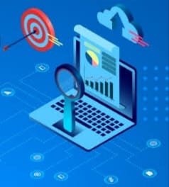
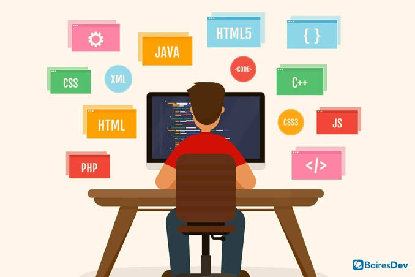
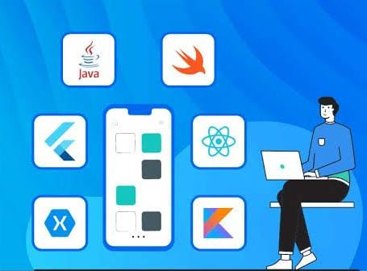
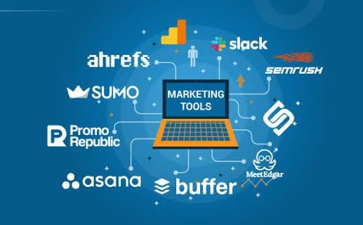
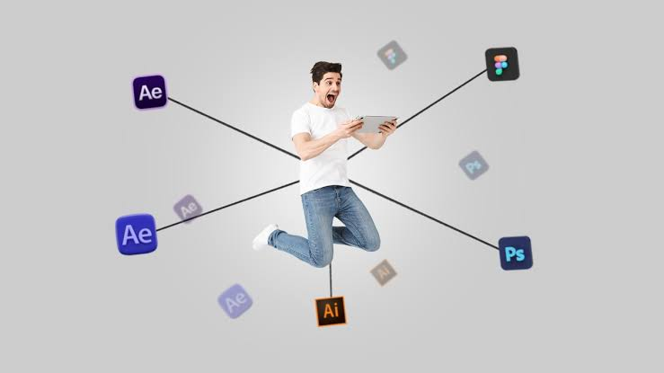

| Home | About Us | Services | Gallery | Contact |
Start your dream
|
 | |||
OUR SERVICES |
||||
1.Website Development |
||||
|
Focusing on creating an intuitive, user-friendly experience for visitors. Ensuring easy navigation,
responsive design (mobile-friendly), and accessibility are key parts of the design process. |
 | |||
2.Mobile App Development |
||||
|
Focused on creating and optimizing mobile-friendly web pages or applications that are designed to support
and showcase a specific project.
These services ensure that the project is accessible, user-friendly, and fully functional on mobile
devices, such as smartphones and tablets. |
 | |||
3.Digital Marketing |
||||
|
Suite of strategies and techniques used to promote, advertise, and increase the visibility of a specific
project through online channels.
|
 | |||
4.Graphic Design |
||||
|
Graphic design is the art and practice of creating visual content to communicate messages. |
 | |||
|
A wide range of services aimed at helping businesses and individuals manage, process, and store
information efficiently.
These services play a critical role in the digital transformation of companies, providing solutions that
drive productivity, innovation,
competitive advantage. |
||||
|
All copyrights© reserved |
||||